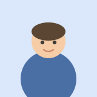

김하늘
웹 페이지를 만드는 사람
HTML 과 CSS 로 작은 페이지를 하나씩 만들고 있습니다. 오늘은 프로필 카드를 만들었습니다.
- 사는 곳 서울 마포구
- 좋아하는 것 산책, 라면, 지도 보기
- 배우는 것 HTML · CSS
14단원 · 종합 연습 · 01~10단원
아래가 완성된 모습입니다. 각 단계의 답과 해설은
이 파일을 VS Code 로 열면 <style> 안과 각 단계 주석에 있습니다.
답이 달라도 결과가 같으면 맞은 것입니다.
완성된 카드

웹 페이지를 만드는 사람
HTML 과 CSS 로 작은 페이지를 하나씩 만들고 있습니다. 오늘은 프로필 카드를 만들었습니다.
── 단계 목록 ──
단계 1 — 카드의 뼈대를 만듭니다 (HTML)
단계 2 — 사진 · 소개 · 정보 목록 · 연락 링크를 채웁니다 (HTML)
단계 3 — 카드에 배경색과 글자색을 줍니다
단계 4 — 카드에 폭을 주고 가운데로 보냅니다
단계 5 — 안쪽 여백 · 테두리 · 둥근 모서리를 줍니다
단계 6 — 사진을 동그랗게 만들고 가운데로 보냅니다
단계 7 — 이름과 직함의 글자를 다듬습니다
단계 8 — 한 줄 소개에 왼쪽 강조 띠를 붙입니다
단계 9 — [도전] 정보 목록에 구분선을 긋습니다
단계 10 — [도전] 연락 띠를 만듭니다